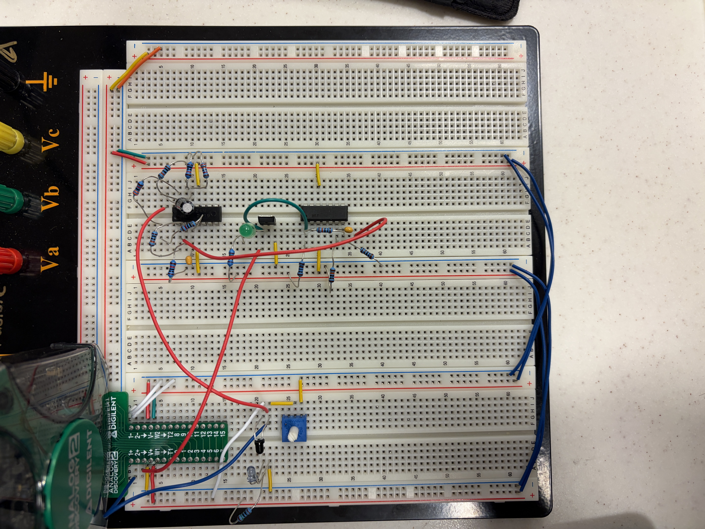
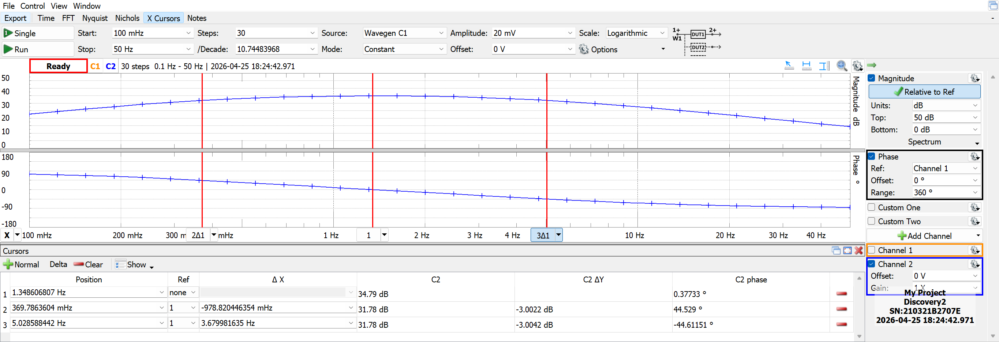
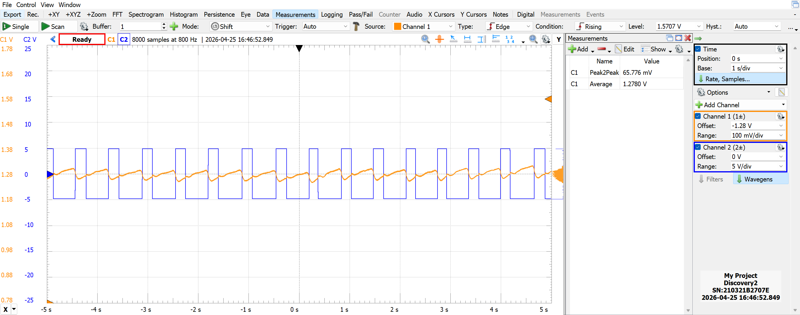
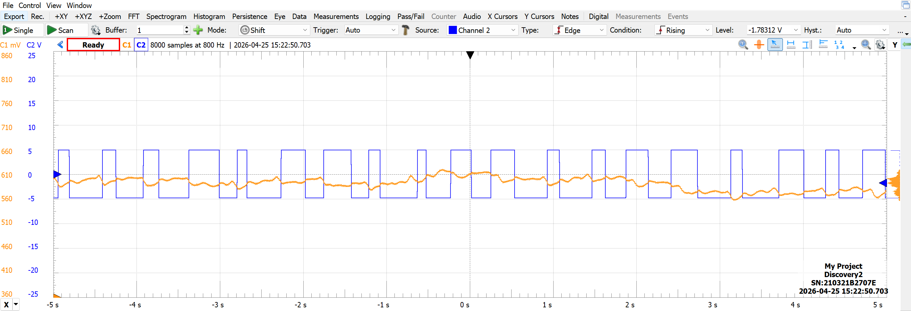

Analog Circuit Design • Signal Processing • Active Filters • Instrumentation
I designed, built, and experimentally validated a non-invasive optical heart rate sensor based on photoplethysmography (PPG). The system used infrared light transmitted through a finger to detect small changes in blood volume associated with each heartbeat.
Because the raw optical signal contained a large DC component and a relatively small heartbeat waveform, I designed an analog signal processing chain to isolate and amplify the pulse before converting it into a clean digital output.
The completed four-stage system combined optical sensing, active high-pass and low-pass filtering, approximately 55 V/V measured peak gain, comparator-based pulse detection, and a physical LED that flashed in synchronization with the user's heartbeat.




The sensing stage used an infrared emitter and phototransistor placed on opposite sides of a finger. Changes in capillary blood volume during each heartbeat altered the amount of infrared light reaching the phototransistor, producing a small periodic voltage variation.
The sensor biasing was selected experimentally to maintain the phototransistor in its active operating region while producing a usable heartbeat signal. The final sensor output measured approximately 1.42 V DC with an approximately 83 mV peak-to-peak heartbeat ripple.
The raw optical signal contained a large DC offset and unwanted low- and high-frequency content. I designed cascaded active high-pass and low-pass filters to isolate the frequency range associated with a human heartbeat while simultaneously amplifying the small sensor waveform.
Each filter stage used a non-inverting LM324 op-amp configuration. Theoretical component values were selected using RC cutoff-frequency equations and non-inverting amplifier gain calculations before the design was built and experimentally characterized.
Frequency Response Analysis measured a lower cutoff of approximately 0.370 Hz and an upper cutoff of approximately 5.03 Hz. The cascaded filter chain reached a measured peak gain of 54.87 V/V near 1.35 Hz.
After filtering and amplification, the analog heartbeat waveform was passed into an LM339 comparator. The comparator converted each detected pulse into a clean digital square-wave output that could be counted directly for heart-rate measurements.
Comparator hysteresis was incorporated to improve noise immunity and reduce the risk of multiple digital transitions from a single heartbeat. The digital signal also controlled an NMOS transistor that drove a green LED, creating a visible pulse indicator.
I used the Analog Discovery 2 to characterize the individual filter stages and the complete cascaded response. Experimental cutoff frequencies, gain, and phase were compared with theoretical design values.
The measured response confirmed that the filter chain passed the intended human-heart-rate frequency range while attenuating DC drift and higher-frequency interference. Differences between theoretical and experimental cutoff frequencies were evaluated in relation to component tolerances and the interaction of the cascaded filters.
The fully integrated circuit was tested using both resting and elevated heart rates. During one resting measurement, the circuit detected 90 BPM while an Apple Watch measured 93 BPM, corresponding to a 3.33% difference.
Elevated-heart-rate testing also demonstrated continued pulse detection, although increased finger movement introduced additional noise into the optical signal. The comparator continued producing distinct digital transitions corresponding to detected heartbeats.
The full project report documents the circuit design, component calculations, schematics, Frequency Response Analysis, experimental measurements, error analysis, and final heart-rate validation.